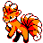

#037
Vulpix
Fire
At the time of birth, it has just one tail. The tail splits from its tip as it grows older
Base stats Total 249
HP38
Attack41
Defense40
Speed65
Special65
Details
- Species
- Fox
- Height
- 2'00"
- Weight
- 22.0 lb
- Catch rate
- 190
- Base exp
- 63
- Growth
- Medium Fast
Level-up moves
LevelMoveType
StartEmberFire
StartTail WhipNormal
Lv 9TackleNormal
Lv 12Quick AttackNormal
Lv 15DisableNormal
Lv 19Fire SpinFire
Lv 21Confuse RayGhost
Lv 22Flame WheelFire
Lv 36FlamethrowerFire
Lv 46Fire BlastFire
Evolution
Where to find
TM / HM
TM06 ToxicTM08 Body SlamTM09 Take DownTM10 Double-EdgeTM28 DigTM31 MimicTM32 Double TeamTM33 ReflectTM34 BideTM37 FlamethrowerTM38 Fire BlastTM39 SwiftTM44 RestTM50 Substitute